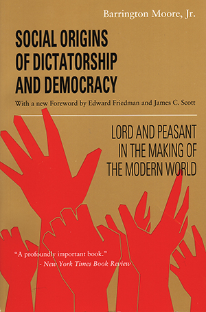
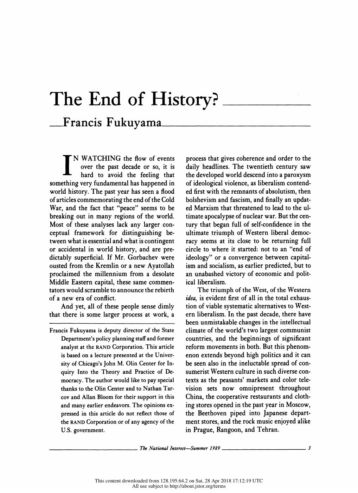
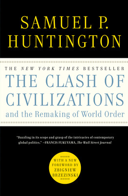
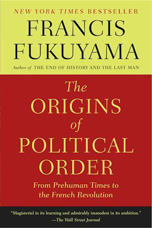
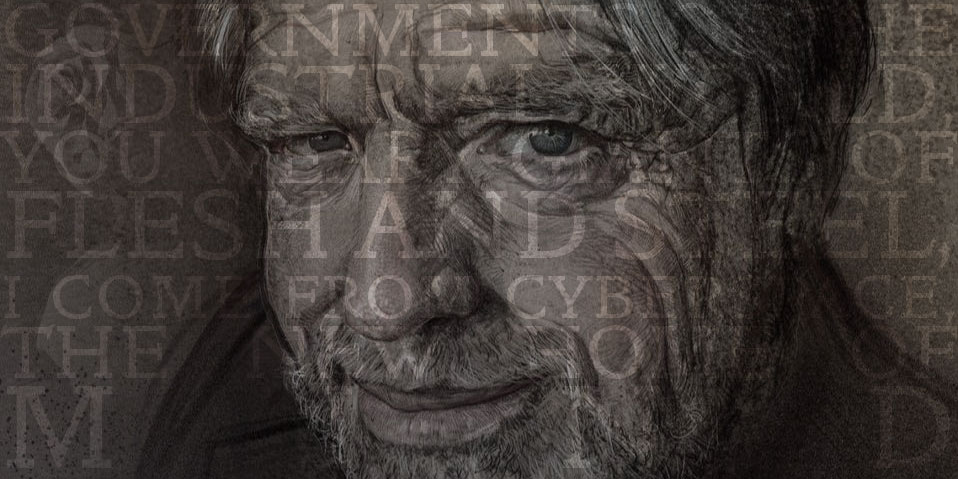
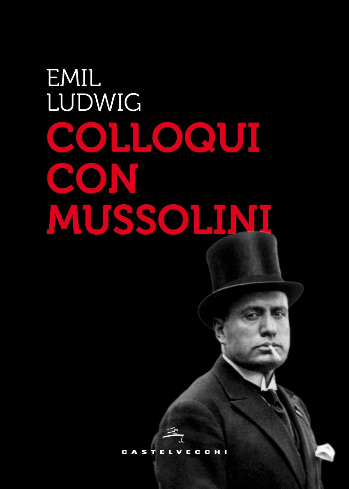

1:25:21 · 13 OPERE
Francis Fukuyama e le origini dell'ordine politico.
Il filo del discorso
Dr Divago discute la formazione dell’ordine politico accostando Barrington Moore e Francis Fukuyama. Un passo di Moore sulla dipendenza delle nazioni minori introduce la sua lettura critica di sovranità, imperialismo e ruolo delle università. Il centro del video è un commento selettivo a The Origins of Political Order: definizione della democrazia, conformità alle regole, decadenza delle istituzioni, pesi e contrappesi e capacità di governo vengono confrontati con episodi della politica contemporanea. Il relatore interpreta diversi passaggi come una difesa della subordinazione del cittadino; la scheda distingue queste deduzioni dal contesto del libro e dai dati istituzionali verificabili. Attraverso Tucidide, Silone, la Dichiarazione d’indipendenza del cyberspazio e i colloqui di Ludwig con Mussolini, il discorso torna al rapporto fra potere e linguaggio. La conclusione oppone alla passività la scelta consapevole: i passi della Repubblica sull’oligarchia, sulla virtù senza padrone e sulla responsabilità individuale sostengono l’ideale di giustizia e saggezza proposto dal relatore. Accuse politiche e giudizi sulle persone restano attribuiti, con correzioni puntuali su cronologia, biografie e controllo pubblico della Federal Reserve.
I libri nel discorso

Social Origins of Dictatorship and Democracy: Lord and Peasant in the Making of the Modern World (Le origini sociali della dittatura e della democrazia)
Copertina: Beacon Press, 1993 · ISBN 9780807050736
Copertina autentica della riedizione inglese 1993, dichiarata distinta dalla prima pubblicazione 1966 ricordata nel video. Le nuove prefazioni non costituiscono opere citate separatamente.
Autore e titolo inglese e italiano sono espliciti; passo inglese della prefazione letto a 1222s.
Passaggio 0:48 ↗ · Fonti e libro ↗
Costituzione della Repubblica Italiana
Copertina dell’edizione Intra aggiornata al 2023: Intra · 2023 · introduzione di Umberto Vincenti
Copertina autentica del testo integrale, aggiornata alla legge costituzionale 26 settembre 2023 n.1. È successiva al filmato del 2019 e non rappresenta la versione storica letta dal relatore. Umberto Vincenti firma l’introduzione.
La Costituzione e il suo primo articolo sono evocati esplicitamente nella polemica introduttiva; nessun nome viene assegnato all’intellettuale non identificato.
Passaggio 3:32 ↗ · Fonti e libro ↗
La Repubblica
Copertina: Laterza · La Repubblica · edizione con testo a fronte di riferimento
Immagine associata all’ISBN di riferimento e controllata visivamente; edizione e traduzione non identificate come quelle citate o lette nel video.
Titolo esplicito. Ritorni indipendenti a 4559s sull’oligarchia, 4796s sulla scelta e 5022s sulla conclusione del dialogo; non sono opere separate.
Passaggio 9:26 ↗ · Fonti e libro ↗
La società aperta e i suoi nemici
Identificazione probabile
Copertina: Armando Editore · Classici · 2018 · volume unico
Copertina autentica di riferimento, controllata visivamente. L’edizione non è identificata come quella usata nel video.
L’espressione Platone nemico della società aperta richiama con forte probabilità l’opera di Popper, senza pronuncia dell’autore o del titolo completo; nessuna edizione è identificata.
Passaggio 9:33 ↗ · Fonti e libro ↗
The Empty Campus
Copertina: Lulu · edizione inglese di riferimento
Immagine associata all’ISBN di riferimento e controllata visivamente; edizione e traduzione non identificate come quelle citate o lette nel video.
Il relatore richiama esplicitamente il proprio libro The Empty Campus.
Passaggio 23:41 ↗ · Fonti e libro ↗
La guerra del Peloponneso
Copertina: Einaudi-Gallimard · Biblioteca della Pléiade · 1997
Copertina autentica controllata visivamente. Edizione di riferimento, non identificata come quella usata nel video.
Le guerre del Peloponneso e il dialogo dei Meli sono nominati; il dialogo è una parte dell’opera, non un volume autonomo aggiunto.
Passaggio 27:57 ↗ · Fonti e libro ↗
The End of History and the Last Man (La fine della storia e l’ultimo uomo)
Copertina: Free Press, 1 marzo 2006, 464 pagine, con nuovo poscritto. Prima edizione del libro 1992, distinta dall’articolo The End of History? del 1989.
Immagine autentica dell’opera, controllata visivamente; l’edizione di riferimento non è attribuita al filmato.
Titolo inglese e traduzione italiana espliciti; è il libro, distinto dall’antecedente articolo 1989.
Passaggio 29:39 ↗ · Fonti e libro ↗
The End of History?
Identificazione probabile
Prima pagina dell’articolo originale, non copertina: Prima pagina dell’articolo originale in The National Interest, n.16, estate 1989, pp.3–18
Prima pagina del facsimile originale dell’articolo pubblicato nel 1989, distinta dalla copertina di un libro e da un frontespizio. Non è confermata la copia materialmente consultata dal relatore.
Si parla del saggio precedente al libro, senza titolo autonomo. The End of History? è identificato come antecedente probabile, con riuso della voce riservata nel lotto 314; il saggio non è letto integralmente nel video.
Passaggio 29:49 ↗ · Fonti e libro ↗
The Clash of Civilizations and the Remaking of World Order (Lo scontro delle civiltà e il nuovo ordine mondiale)
Copertina: Simon & Schuster · paperback del 2 agosto 2011 · ISBN 9781451628975
Copertina autentica dell’edizione inglese del 2011 con nuova prefazione di Zbigniew Brzezinski, acquisita dal collegamento immagini del catalogo ufficiale. Non è una copertina dell’articolo del 1993, né un’edizione individuata come esemplare usato dal relatore.
Il titolo inglese, anche nel sottotitolo sul world order, è pronunciato; l’autore Huntington è nominato.
Passaggio 31:16 ↗ · Fonti e libro ↗
The Origins of Political Order: From Prehuman Times to the French Revolution
Copertina: Farrar, Straus and Giroux · 27 marzo 2012 · ISBN 9780374533229
Copertina autentica della brossura inglese 2012 verificata presso l’editore. Corrisponde a lingua e formato dichiarati; l’esemplare materialmente mostrato non è stato controllato visivamente.
Opera centrale del video: titolo e sottotitolo letti, prima pubblicazione 2011 e brossura 2012 distinti. Il commento è selettivo e non una lettura integrale del volume.
Passaggio 32:31 ↗ · Fonti e libro ↗
La scuola dei dittatori
Identificazione probabile
Copertina: Mondadori · Narratori Italiani 102 · prima edizione italiana riveduta, 1962
Fotografia autentica della sovraccoperta illustrata da Franco Francese, edizione Mondadori 1962; estratta senza ricompressione dal PDF del catalogo Pontremoli, pagina 49 del file, pagina 47 stampata. Il 1938 riguarda la precedente versione dell’opera, non l’esemplare fotografato. Il video non identifica questa edizione.
Titolo La scuola dei dittatori esplicito, autore non ripetuto; riuso della voce Silone già verificata nel repertorio.
Passaggio 35:39 ↗ · Fonti e libro ↗
A Declaration of the Independence of Cyberspace (Dichiarazione d’indipendenza del cyberspazio)
Illustrazione EFF del documento, non facsimile: Electronic Frontier Foundation · illustrazione ufficiale della pagina del documento
Illustrazione editoriale originale EFF collegata specificamente alla pagina della Dichiarazione: ritratto di Barlow con parole dell’incipit sovrapposte. Non è un facsimile, un frontespizio o la copertina di un libro. Nessuna ricostruzione tipografica è stata prodotta.
Titolo e incipit rivolto ai governi del mondo industrializzato riconoscibili, citati tramite Fukuyama. Autore e data verificati nel testo EFF.
Passaggio 1:05:12 ↗ · Fonti e libro ↗
Colloqui con Mussolini (Mussolinis Gespräche mit Emil Ludwig)
Identificazione probabile
Copertina: Castelvecchi, 2018 · ISBN 9788832824322
Copertina autentica della riedizione Castelvecchi 2018. Non è la copertina Mondadori 1932 né prova che il relatore usi questa edizione. L’identificazione della menzione resta probabile.
Colloqui di Ludwig con Mussolini e soppressioni successive descritti, senza titolo pronunciato; identificazione probabile con l’opera verificata del 1932.
Passaggio 1:05:59 ↗ · Fonti e libro ↗